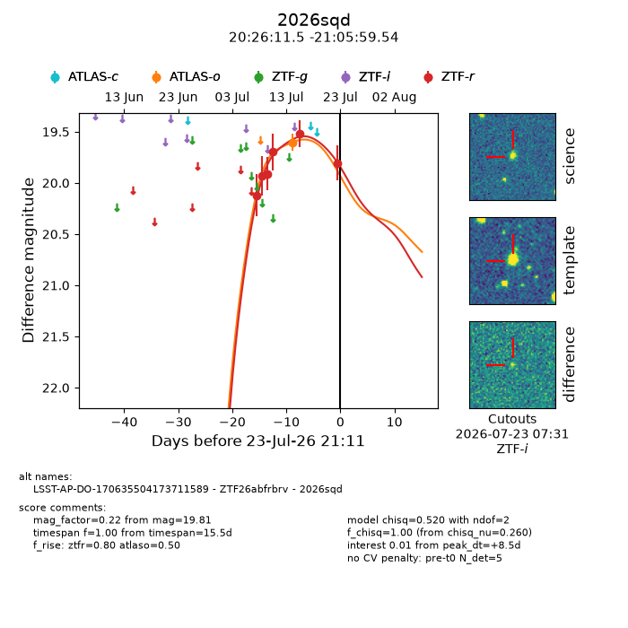
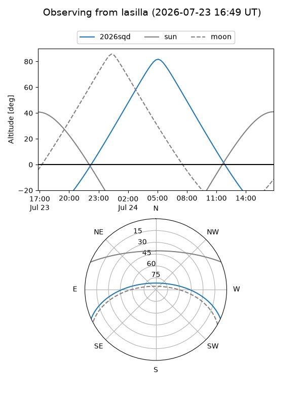
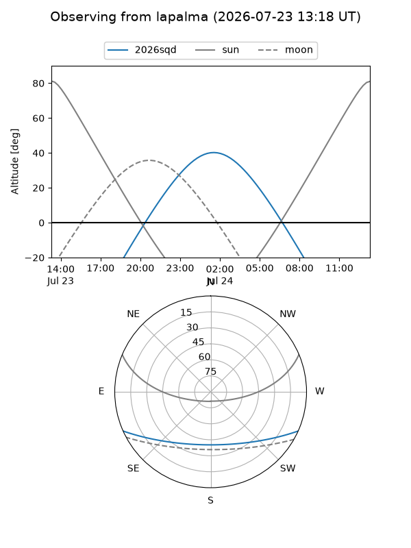
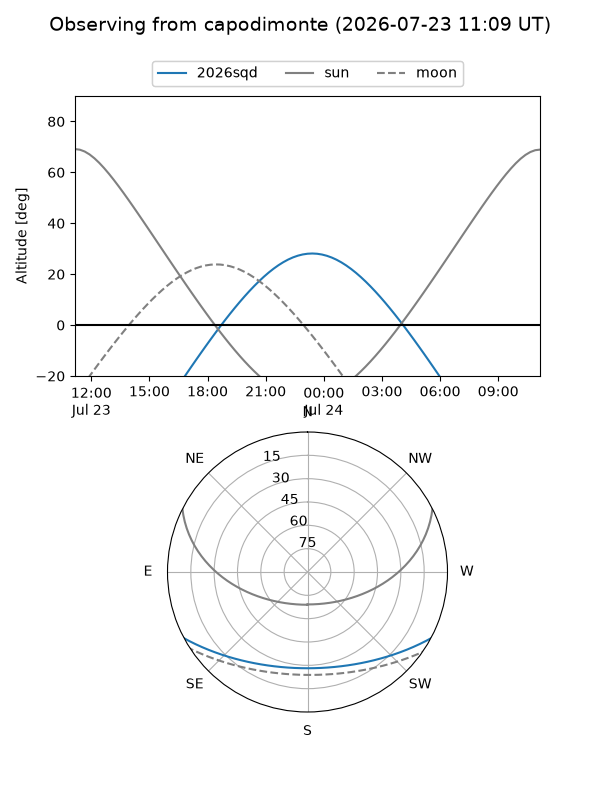
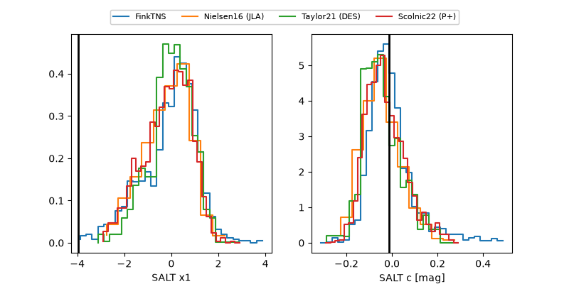

2026sqd
Target 2026sqd at 2026-07-23 21:14
Aliases and brokers:
FINK-ZTF: ztf.fink-portal.org/ZTF26abfrbrv
Lasair-ZTF: lasair-ztf.lsst.ac.uk/objects/ZTF26abfrbrv
ALeRCE-ZTF: alerce.online/object/ZTF26abfrbrv
YSE-PZ: ziggy.ucolick.org/yse/transient_detail/2026sqd
TNS name: wis-tns.org/object/2026sqd
Direct TNS query: direct search
alt names
ZTF26abfrbrv (ztf,fink_ztf)
2026sqd (tns,yse)
LSST-AP-DO-170635504173711589 (iau_lsst)
Coordinates:
equatorial (ra, dec) = 306.5478,-21.09987
equatorial (HMS+DMS) = 20:26:11.46,-21:05:59.54
galactic (l, b) = (23.0079,-29.85064)
Flags:
TNS type: nan
peak dt: +8.5
Photometry:
last atlaso=19.60, ztfr=19.81
1 atlaso, 6 ztfr detections
Lightcurve

Visibility



Additional plots
